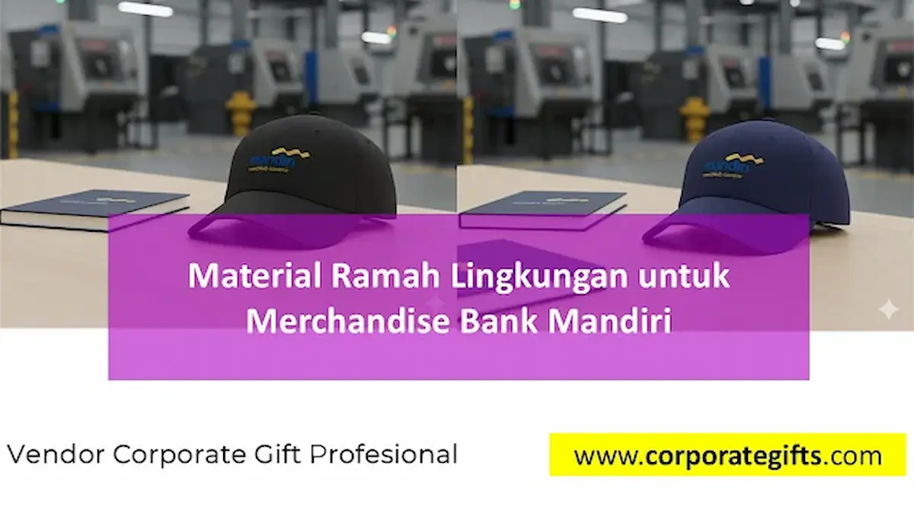

Corporate Gifts ID - Di tengah akselerasi komitmen industri global terhadap prinsip keberlanjutan (sustainability), institusi perbankan terkemuka di Indonesia semakin selektif dalam merancang strategi promosi mereka. Bagi Bank Mandiri, implementasi merchandise perusahaan ramah lingkungan berbahan bambu alami, food-grade stainless steel, dan serat kanvas daur ulang bukan sekadar pemenuhan seremonial cinderamata, melainkan wujud nyata kepemimpinan dalam praktik green banking dan tanggung jawab lingkungan.
Penggunaan cinderamata ramah lingkungan (eco-friendly corporate gifts) secara langsung mendukung pengurangan limbah plastik sekali pakai, menekan jejak karbon operasional, serta mempertegas citra Bank Mandiri sebagai bank BUMN yang visioner dan peduli terhadap masa depan ekosistem bumi.
Poin Kunci Merchandise Ramah Lingkungan Perbankan:
- Wujud Prinsip ESG: Representasi nyata komitmen Environmental, Social, and Governance (ESG) Bank Mandiri kepada para nasabah dan pemangku kepentingan.
- Material Unggulan: Pemanfaatan bambu bersertifikasi FSC, stainless steel SUS 304 tahan karat, kanvas katun daur ulang, dan gabus alami.
- Durabilitas Bernilai Tinggi: Memberikan masa pakai harian bertahun-tahun sehingga menciptakan eksposur merek positif yang berkelanjutan.
- Teknik Personalisasi Presisi: Penerapan grafir laser presisi dan teknik deboss elegan tanpa pewarna kimia berbahaya.
Urgensi Green Merchandise dalam Sektor Perbankan
Merchandise institusional berfungsi sebagai jembatan komunikasi nilai antara perbankan dan masyarakat. Di era saat nasabah dan investor korporat semakin memprioritaskan etika lingkungan, barang promosi plastik berkualitas rendah berisiko memunculkan persepsi negatif terhadap brand.
Bagi institusi finansial berskala raksasa seperti Bank Mandiri, beralih ke material alami dan daur ulang memberikan bukti konkret atas konsistensi program Sustainable Action for Future Environment. Langkah ini selaras dengan upaya mempertahankan standar visual institusi yang solid dan terpercaya.
4 Pilihan Material Ramah Lingkungan Unggulan
Pemilihan bahan dasar cinderamata harus mempertimbangkan keseimbangan antara aspek kelestarian lingkungan, kekuatan struktur fisik, serta estetika visual yang mencerminkan prestise institusi.
1. Bambu Alami Bersertifikasi (Sustainable Bamboo)
Bambu adalah tanaman dengan laju pertumbuhan tercepat di dunia tanpa memerlukan pestisida kimia. Sifat seratnya yang padat, tahan lembap, dan mudah terurai secara hayati (biodegradable) menjadikannya material ideal untuk tumbler insulasi, casing flashdisk kartu, pulpen eksekutif, hingga sampul buku agenda kerja.
Kesan Visual: Tekstur guratan serat kayu bambu menghadirkan nuansa hangat, modern, dan sangat elegan saat dipadukan dengan teknik ukiran logo grafir laser.
2. Food-Grade Stainless Steel SUS 304 / 316
Sebagai pengganti utama botol minum plastik konvensional, stainless steel memiliki ketahanan korosi luar biasa dan dapat didaur ulang tanpa menurunkan kualitas dasarnya. Smart tumbler dan termos vakum dinding ganda berbahan ini mampu menjaga suhu minuman panas atau dingin hingga 12 jam.
Kesan Visual: Tampilan permukaan metalik satin atau powder coating matte menonjolkan kesan tangguh, presisi, dan profesional, sangat selaras dengan nilai keandalan Bank Mandiri.
3. Serat Kanvas Katun Organik & R-PET (Recycled Polyester)
Tote bag seminar, tas laptop, dan pouch dokumen yang diproduksi dari kanvas katun organik atau serat R-PET (daur ulang botol plastik plastik PET) memberikan alternatif tas fungsional yang kuat dan ramah bumi.
Kesan Visual: Tampilan kain bertekstur natural dengan jahitan rapi menjadikannya aksesori harian favorit para profesional muda dan nasabah prioritas di luar acara formal.
4. Kertas Daur Ulang & Serat Gabus Alami (Cork Fabric)
Kertas daur ulang bersertifikasi FSC (Forest Stewardship Council) yang dipadukan dengan sampul bermaterial serat kulit gabus (cork) menghasilkan buku catatan rapat (notebook) yang sangat eksklusif dan bebas eksploitasi pohon berlebih.
Tabel Komparasi Karakteristik Material Eco-Friendly
Berikut adalah perbandingan atribut teknis, aspek keberlanjutan, dan rekomendasi aplikasi produk untuk pengadaan merchandise perbankan:
| Jenis Material | Tingkat Biodegradabilitas | Daya Tahan Pakai | Teknik Personalisasi Logo | Rekomendasi Produk |
|---|---|---|---|---|
| Bambu Alami | Sangat Tinggi (100% Organik) | 3 - 5 Tahun | Laser Engraving / Grafir Presisi | Tumbler Bambu, Pulpen Metal-Bambu, Agenda |
| Stainless Steel SUS 304 | 100% Dapat Didaur Ulang | Lebih dari 10 Tahun | Laser Etching, UV Printing Matte | Smart Termos Suhu, Cutlery Set Portabel |
| Serat Kanvas Katun Organik | Tinggi (Dapat Terurai Alami) | 2 - 4 Tahun | Sablon Rubber Ramah Air, Bordir Komputer | Tote Bag Seminar, Pouch Charger Gadget |
| Serat Gabus (Cork) | Sangat Tinggi (Panen Kulit Pohon) | 3 - 5 Tahun | Deboss Hot Stamping, Grafir Laser | Mousepad Meja, Notebook Kulit Gabus, Dompet Kartu |
| Serat Kertas Daur Ulang FSC | Cepat Terurai | 1 - 2 Tahun | Cetak Offset Tinta Kedelai (Soy Ink) | Kalender Meja, Buku Memo, Gift Box Packaging |

Penerapan bahan kanvas daur ulang dan aksen kayu bambu menghadirkan cinderamata perbankan yang estetik sekaligus mendukung pelestarian lingkungan.
Mitigasi Tantangan Pengadaan Merchandise Berkelanjutan
Transisi menuju cinderamata hijau sering kali dihadapkan pada beberapa tantangan teknis dalam proses pengadaan korporat:
- Konsistensi Kualitas Rantai Pasok: Material alami seperti bambu memiliki variasi warna urat alami. Mitigasinya adalah menerapkan proses seleksi bahan grade A yang seragam sebelum produksi massal dimulai.
- Keseimbangan Anggaran (Cost vs Value): Walaupun harga bahan organik berkualitas sedikit di atas plastik biasa, nilai retensi pakai harian yang tinggi menghasilkan biaya promosi efektif per hari yang jauh lebih hemat.
- Kerapian Finishing Desain: Menghindari penggunaan cat sablon kimia yang mudah mengelupas. Penerapan ukiran laser atau teknik penekanan deboss tanpa tinta menghasilkan logo yang tajam dan abadi.
4 Pilar Strategi Integrasi Merchandise Hijau Bank Mandiri
Agar implementasi cinderamata ramah lingkungan memberikan dampak optimal bagi identitas perbankan, empat langkah strategis berikut dapat diterapkan:
1. Audit Sertifikasi Vendor & Rantai Pasok
Memastikan mitra vendor pengadaan memiliki dokumentasi sertifikasi resmi untuk bahan kayu/kertas (FSC) dan standar keamanan material pangan (FDA/BPA-Free untuk wadah minuman).
2. Segmentasi Produk Berdasarkan Target Penerima
Menyesuaikan jenis cinderamata: paket seminar kit kanvas daur ulang untuk pelatihan publik, tumbler bambu laser logo untuk pegawai internal, serta executive gift set stainless-bambu dalam kemasan rigid box daur ulang untuk nasabah prioritas.
3. Narasi Keberlanjutan pada Kemasan (Storytelling Packaging)
Menyertakan kartu informasi ringkas (story card) dari kertas daur ulang pada kemasan yang menceritakan berapa gram jejak karbon atau sampah plastik yang berhasil dikurangi melalui penggunaan cinderamata tersebut.
4. Penggunaan Desain Modular dan Timeless
Mengadopsi tata letak desain minimalis yang abadi, sehingga barang promosi tetap relevan dan dibanggakan penggunaannya dalam jangka panjang tanpa terpengaruh tren sesaat.
Dampak Strategis Terhadap Citra BUMN & ESG Rating
Penerapan merchandise ramah lingkungan secara konsisten memperkuat status Bank Mandiri sebagai pelopor transformasi hijau di sektor perbankan Indonesia. Langkah ini memberikan kontribusi nyata pada peningkatan skor penilaian ESG korporat di mata investor institusional domestik maupun internasional.
Lebih dari itu, nasabah yang menerima cinderamata berkualitas tinggi dan bernilai ekologis merasakan ikatan emosional (brand loyalty) yang lebih kuat karena merasa menjadi bagian dari gerakan pelestarian lingkungan bersama institusi kepercayaannya.
Solusi Merchandise Ramah Lingkungan dari CorporateGifts.ID
CorporateGifts.ID siap mendukung pengadaan souvenir kantor dan merchandise perbankan ramah lingkungan berkualitas tinggi. Kami menyediakan lini produk eco-friendly lengkap yang siap dikustomisasi logo institusi dengan standar kontrol mutu ketat, garansi ketepatan waktu, dan layanan pengiriman ke seluruh Indonesia.
Konsultasikan kebutuhan merchandise hijau instansi Anda bersama tim spesialis kami untuk mendapatkan katalog lengkap dan sampel mockup desain eksklusif secara gratis.